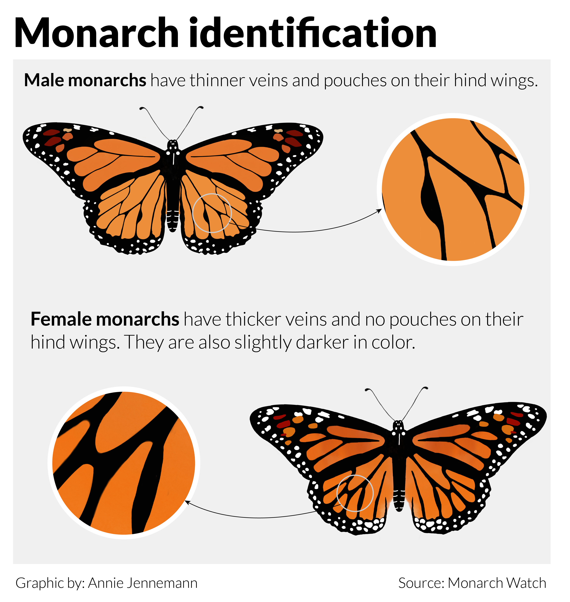
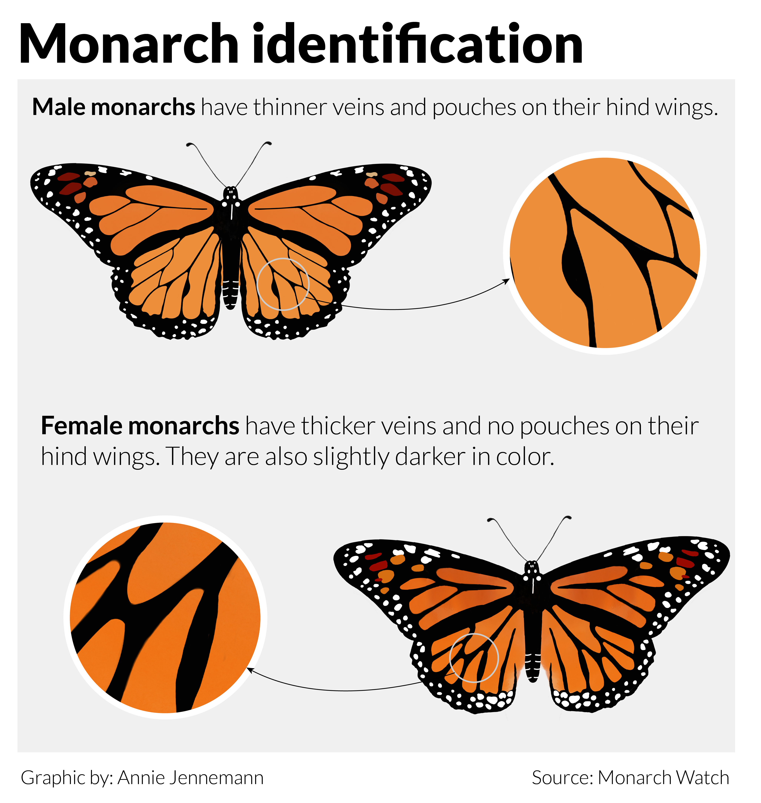
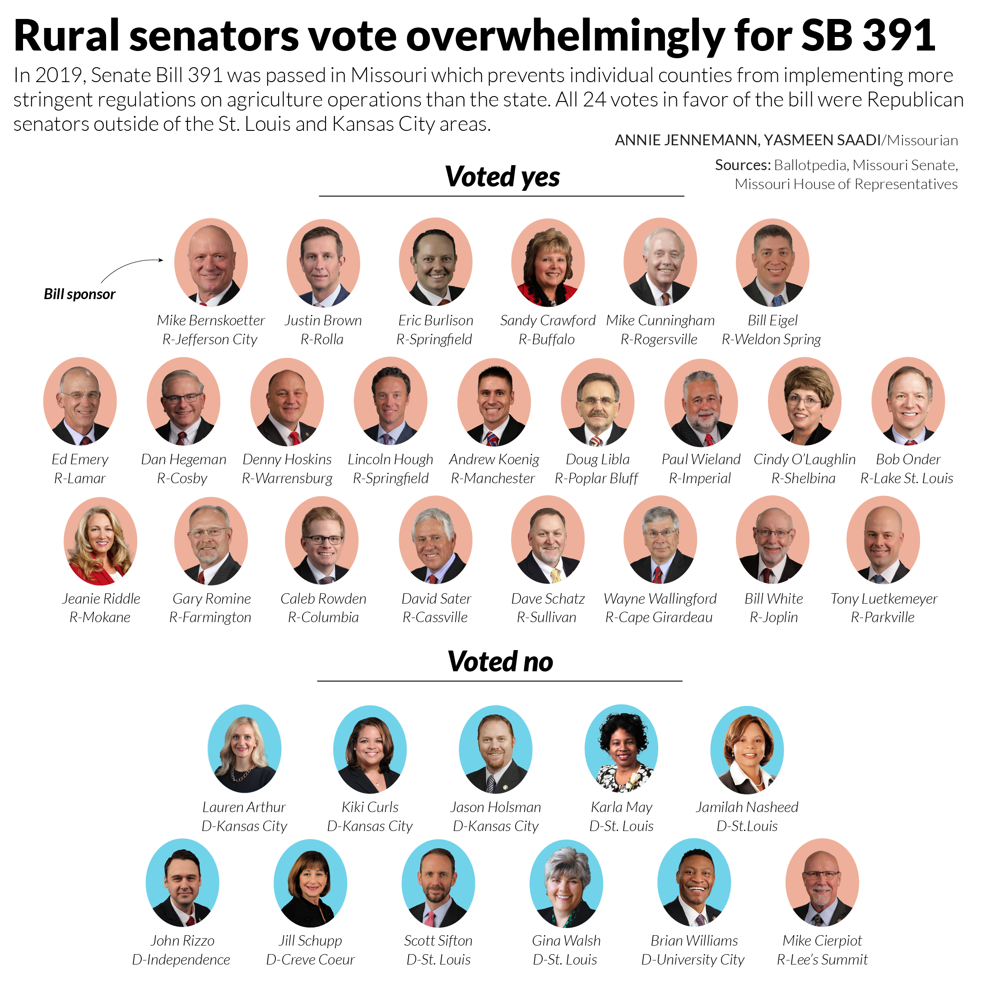
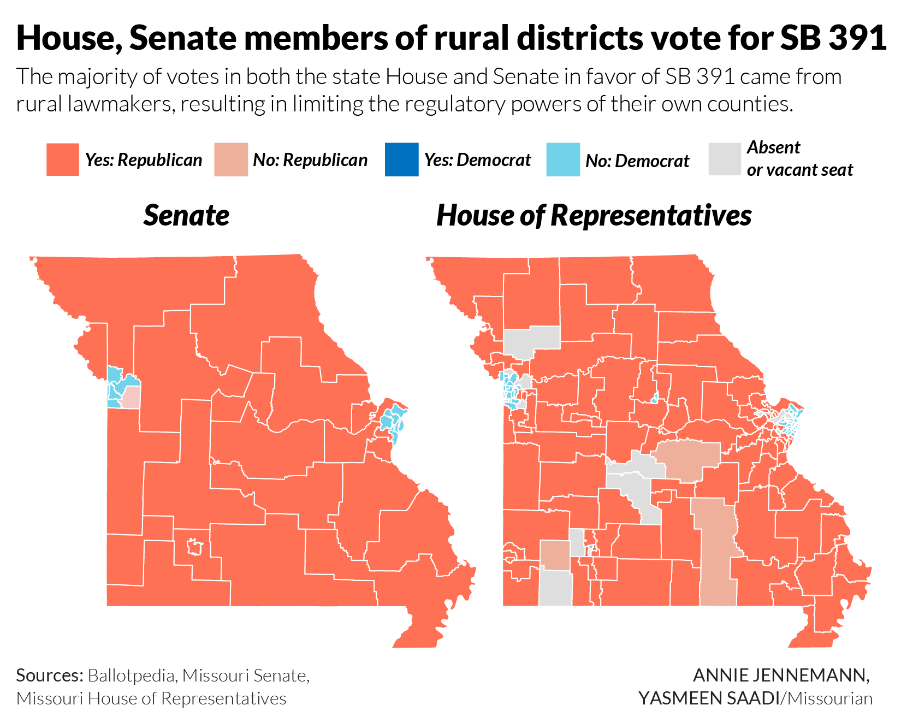
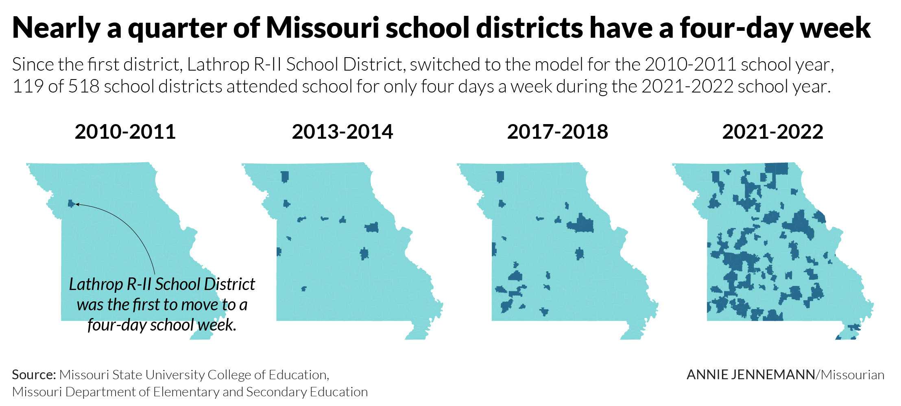
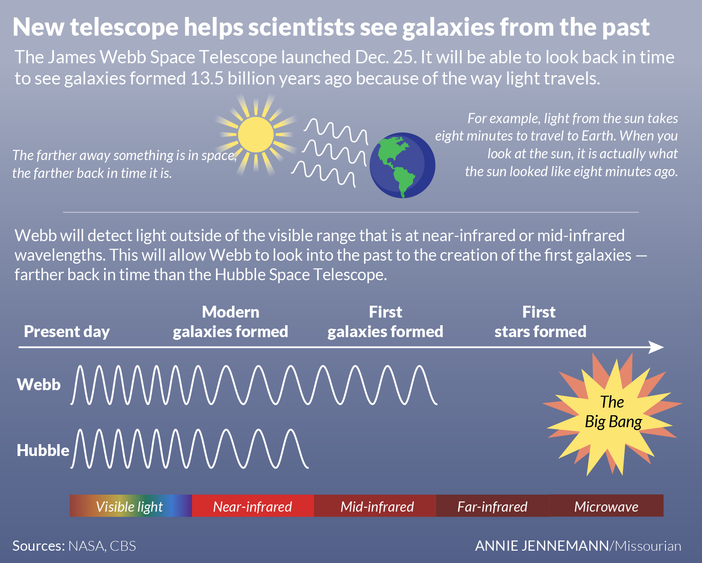

Graphic samples
![A map of North America shows monarch migration patterns. Western monarchs travel from west of the Rocky Mountains to the coast of California to overwinter. Overwintering is a semi-dormant state where monarchs cluster in trees during the winter. Some of the western monarchs may also travel to overwintering sites in Mexico. Eastern monarchs travel from areas in the north east of the Rocky Mountains to overwintering sites in Mexico. After winter, monarchs travel from overwintering sites back to their summer sites in northern parts of the U.S. and Canada.](images/monarch-map-01.png) 

I created these graphics for story in Flatland I reported about monarchs being listed as endangered by the IUCN.
Download the monarch migration map Download the monarch illustration{kind=link}
Tools used: Adobe Illustrator, Procreate

I created this graphic for a story about agriculture consolidation in Missouri. I used Photoshop to cut out the images and Illustrator for the layout.
Tools used: Adobe Illustrator, Photoshop
Download{kind=link}

I created these maps for a story about agriculture consolidation in Missouri. I used QGIS to create and color code the maps, downloaded them as SVGs and designed the layout in Illustrator.
Tools used: Adobe Illustrator, QGIS
Download{kind=link}

I created this map for a story about the four-day school week in rural Missouri. The story and graphics are a part of a bigger series called 2,500 Below about the changing landscapes of Missouri's small towns. I used QGIS to save the school district outlines as SVGs and uploaded them to Adobe Illustrator to create the layout.
Tools used: Adobe Illustrator, QGIS
Download{kind=link}

I created this infographic for a story about an MU professor being granted access to use the James Webb Space Telescope for the Columbia Missourian.
Tools used: Adobe Illustrator
Download{kind=link}

I created this map for a story on coal mines in Boone County for the Columbia Missourian. I used RStudio to clean the data and Adobe Illustrator to design the graphic.
Tools used: RStudio, Adobe Illustrator
Download![A graphic spread showing Boone County 2020 census data. The spread shows an area line chart of Boone County's population over a century where the population in 2020 reached 183,610 people. The spread also shows a bar chart of the top five growing counties in Missouri from 2010 to 2020 where Boone County is the fifth highest growing county, growing 12.89%. The last part of the spread are 8 mini bar charts showing the change in population for people of different races and ethnicities. The data came from the U.S. Census Bureau.](images/census_spread-01.png)
Most recently, I worked with the other graphics editor at the Missourian to create this spread about 2020 census data in Boone County.
Tool used: Adobe Illustrator
Download
In August, an editor for the Missourian asked me to create a timeline about the history of Missouri in honor of the state's bicentennial. I was given as much space as I needed in the print edition, which resulted in a double-truck timeline that was almost two full pages. I really enjoyed working on this graphic and getting a chance to use my design skills in such a big space.
Tool used: Adobe Illustrator
Download![A graphic spread of data about medical marijuana and marijuana arrests in Missouri. The spread includes an area line chart showing marijuana possession arrests from 2010 to 2019 broken down by race, a bar chart of possession arrests by age and sex, a heat map of possession arrests per 100,000 people by state, with Wyoming and South Dakota at the highest arrest rate, and an illustration showing the levels of consequences for possessing different amounts of marijuana. The data came from the FBI and the National Organization for the Reform of Marijuana Laws.](images/marijuana-01.png)
This is a spread about marijuana-related arrests in Missouri that I created for my final project in the information graphics class at MU. It is a full-page and was published in the print edition of the Missourian Jan. 2021.
Tool used: Adobe Illustrator
Download
This is a graphic illustration I created on the graphics desk at the Columbia Missourian showing examples of fall colors in trees in mid-Missouri.
Tool used: Adobe Illustrator
Download